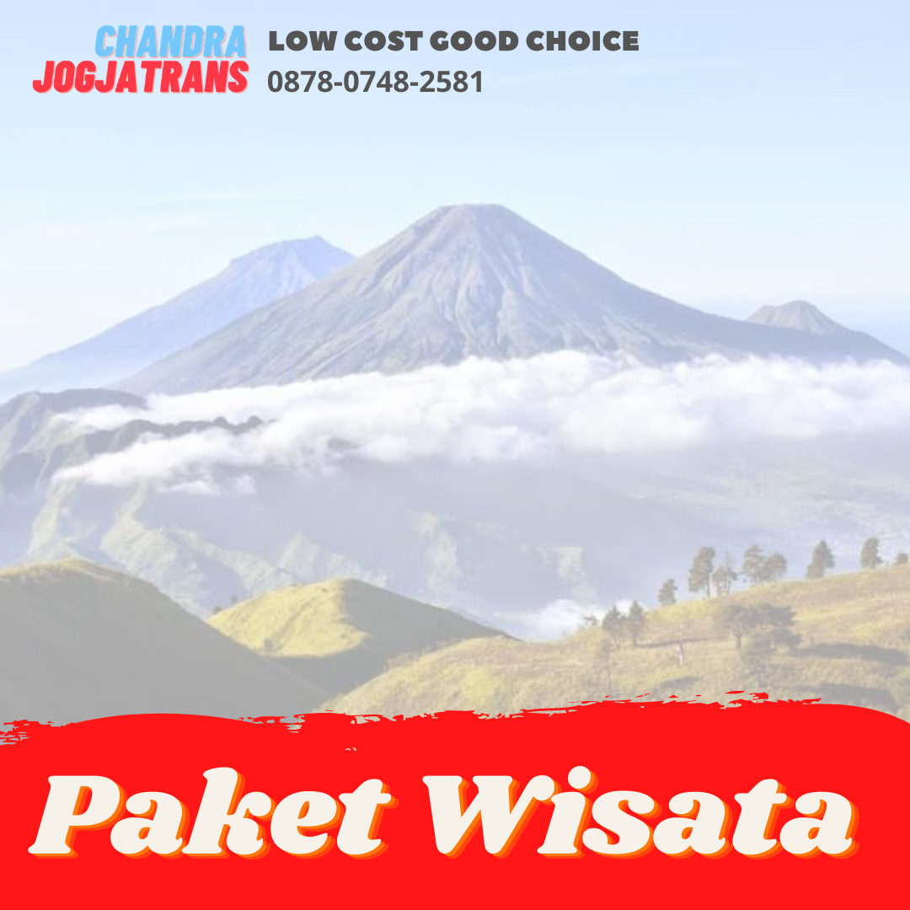

Destinasi Wisata di Jogja
-

Surga di Pacitan
Pacitan yang terletak di ujung barat paling selatan di Jawa Timur ini menyimpan goa dan pantai yang indah sehingga disebut kota 1001 GoaLihat Detail -
Negeri di Atas Awan, Dieng
Dieng, dataran tinggi yang membuat kita merasa berada di negeri dongeng. Terdapat desa tertinggi di pulau Jawa. Bisa dibayangkan betapa ademnya tinggal disini. Disini juga terdapat spot sunrise terbaikLihat Detail -
Explore Malang
Malang menjadi tujuan wisata para wisatawan. Dari pantai hingga gunung ada di kota ini. Yang paling terkenal adalah gunung Bromo nya itu. Kamu kapan ?Lihat Detail

Daftar Wisata Kota lain
Bali
Pantai Kuta, Pantai Sanur, Tanjung Benoa, Garuda Wisnu Kencana, Pantai Pandawa, Tanah Lot
Dieng
Sunrise Sikunir, Kawah Sikidang, Candi Arjuna, Telaga Warna, Batu Pandang, Gunung Prau, Kebun Teh Tambi
Malang
Gunung Bromo, Museum Angkut, Jatim Park 1 2 3, Batu Night Spectakuler, Taman Selecta, Pantai Tiga Warna
Surabaya
Tugu Sura dan Baya, Jembatan Suramadu
Bandung
Pantai Kuta, Pantai Sanur, Tanjung Benoa, Garuda Wisnu Kencana, Pantai Pandawa, Tanah Lot
Banyumas
Sunrise Sikunir, Kawah Sikidang, Candi Arjuna, Telaga Warna, Batu Pandang, Gunung Prau, Kebun Teh Tambi
Jakarta
Gunung Bromo, Museum Angkut, Jatim Park 1 2 3, Batu Night Spectakuler, Taman Selecta, Pantai Tiga Warna
Karimun Jawa
Tugu Sura dan Baya, Jembatan Suramadu
Kebumen
Pantai Kuta, Pantai Sanur, Tanjung Benoa, Garuda Wisnu Kencana, Pantai Pandawa, Tanah Lot
Lombok
Sunrise Sikunir, Kawah Sikidang, Candi Arjuna, Telaga Warna, Batu Pandang, Gunung Prau, Kebun Teh Tambi
Pacitan
Gunung Bromo, Museum Angkut, Jatim Park 1 2 3, Batu Night Spectakuler, Taman Selecta, Pantai Tiga Warna
Pangandaran
Tugu Sura dan Baya, Jembatan Suramadu
Semarang
Tugu Sura dan Baya, Jembatan Suramadu